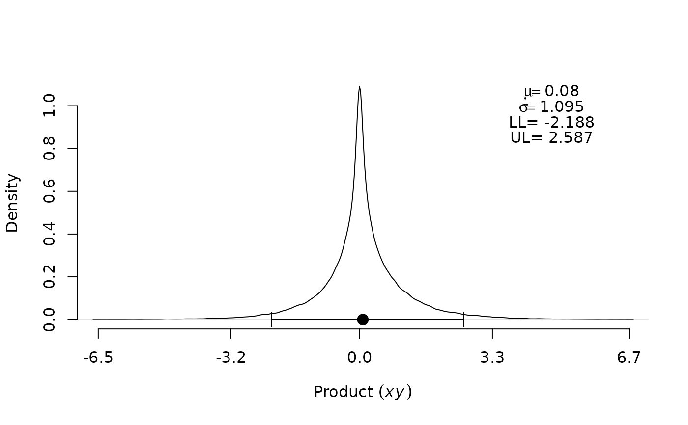

Produces confidence intervals for the mediated effect and the product of two normal random variables
Produces confidence intervals for the mediated effect and the product of two normal random variables
Usage
medci(
mu.x,
mu.y,
se.x,
se.y,
rho = 0,
alpha = 0.05,
type = "dop",
plot = FALSE,
plotCI = FALSE,
n.mc = 1e+05,
...
)
medci(
mu.x,
mu.y,
se.x,
se.y,
rho = 0,
alpha = 0.05,
type = "dop",
plot = FALSE,
plotCI = FALSE,
n.mc = 1e+05,
...
)Arguments
- mu.x
mean of \(x\)
- mu.y
mean of \(y\)
- se.x
standard error (deviation) of \(x\)
- se.y
standard error (deviation) of \(y\)
- rho
correlation between \(x\) and \(y\), where -1 <
rho< 1. The default value is 0.- alpha
significance level for the confidence interval. The default value is .05.
- type
method used to compute confidence interval. It takes on the values
"dop"(default),"MC","asymp"or"all"- plot
when
TRUE, plots the distribution ofn.mcdata points from the distribution of product of two normal random variables using the density estimates provided by the functiondensity. The default value isFALSE.- plotCI
when
TRUE, overlays a confidence interval with error bars on the plot for the mediated effect. Note that to obtain the CI plot, one must also specifyplot="TRUE". The default value isFALSE.- n.mc
when
type="MC",n.mcdetermines the sample size for the Monte Carlo method. The default sample size is 1E5.- ...
additional arguments to be passed on to the function.
Value
A vector of lower confidence limit and upper confidence limit. When
type is "prodclin" (default), "DOP", "MC" or
"asymp", medci returns a list that contains:
- CI
a vector of lower and upper confidence limits (at significance level \(\alpha\)),
- Estimate
a point estimate of the quantity of interest,
- SE
standard error of the quantity of interest,
- MC Error
When
type="MC", error of the Monte Carlo estimate.
Note that when type="all", medci returns a list of
four objects, each of which a list that contains the results
produced by each method as described above.
A vector of lower confidence limit and upper confidence limit. When
type is "prodclin" (default), "DOP", "MC" or
"asymp", medci returns a list that contains:
- (\(1-\alpha\))% CI
a vector of lower and upper confidence limits,
- Estimate
a point estimate of the quantity of interest,
- SE
standard error of the quantity of interest,
- MC Error
When
type="MC", error of the Monte Carlo estimate.
Note that when
type="all", medci returns a list of four
objects, each of which a list that contains the results produced by
each method as described above.
Details
This function returns a confidence interval at significance level
\(\alpha\) for the mediated effect (product of two normal random
variables). To obtain a confidence interval using a specific method, the
argument type should be specified. The default is type="dop", which uses the code
we wrote in R to implement the distribution of product of the coefficients
method described by Meeker and Escobar (1994) to evaluate the CDF of the
distribution of product. type="MC" uses the Monte Carlo approach to
compute the confidence interval (Tofighi & MacKinnon, 2011).
type="asymp" produces the asymptotic normal confidence interval.
Note that except for the Monte Carlo method, the standard error for the
indirect effect is based on the analytical results by Craig (1936):
$$SE = \sqrt{\sigma_y^2 \mu_x^2 + \sigma_x^2 \mu_y^2 + 2\mu_x\mu_y\rho\sigma_x\sigma_y + \sigma_x^2\sigma_y^2 + \sigma_x^2\sigma_y^2\rho^2}$$
where \(\sigma_x\) and \(\sigma_y\) are the standard errors of \(x\) and \(y\),
respectively. In addition, the estimate of the indirect effect is
\(\mu_x\mu_y + \sigma_{xy}\), where \(\sigma_{xy}\) is the covariance between
\(x\) and \(y\). The argument type="all" prints confidence intervals
using all available methods.
This function returns a (\(1-\alpha\))% confidence interval for
the mediated effect (product of two normal random variables). To obtain a
confidence interval using a specific method, the argument type
should be specified. The default is type="dop", which uses the code
we wrote in R to implement the distribution of product of the coefficients
method described by Meeker and Escobar (1994) to evaluate the CDF of the
distribution of product. type="MC" uses the Monte Carlo approach to
compute the confidence interval (Tofighi & MacKinnon, 2011).
type="asymp" produces the asymptotic normal confidence interval.
Note that except for the Monte Carlo method, the standard error for the
indirect effect is based on the analytical results by Craig (1936):
$$\sqrt(se.y^2 \mu.x^2+se.x^2 \mu.y^2+2 \mu.x \mu.y \rho se.x se.y+
se.x^2 se.y^2+se.x^2 se.y^2 \rho^2) $$. In addition, the estimate of
indirect effect is \(\mu.x \mu.y +\sigma.xy \); type="all" prints
confidence intervals using all four options.
References
Craig, C. C. (1936). On the frequency function of \(xy\). The Annals of Mathematical Statistics, 7, 1–15.
MacKinnon, D. P., Fritz, M. S., Williams, J., and Lockwood, C. M. (2007). Distribution of the product confidence limits for the indirect effect: Program PRODCLIN. Behavior Research Methods, 39, 384–389.
Meeker, W. and Escobar, L. (1994). An algorithm to compute the CDF of the product of two normal random variables. Communications in Statistics: Simulation and Computation, 23, 271–280.
Tofighi, D. and MacKinnon, D. P. (2011). RMediation: An R package for mediation analysis confidence intervals. Behavior Research Methods, 43, 692–700. doi:10.3758/s13428-011-0076-x
Craig, C. C. (1936). On the frequency function of \(xy\). The Annals of Mathematical Statistics, 7, 1–15.
MacKinnon, D. P., Fritz, M. S., Williams, J., and Lockwood, C. M. (2007). Distribution of the product confidence limits for the indirect effect: Program PRODCLIN. Behavior Research Methods, 39, 384–389.
Meeker, W. and Escobar, L. (1994). An algorithm to compute the CDF of the product of two normal random variables. Communications in Statistics: Simulation and Computation, 23, 271–280.
Tofighi, D. and MacKinnon, D. P. (2011). RMediation: An R package for mediation analysis confidence intervals. Behavior Research Methods, 43, 692–700. doi:10.3758/s13428-011-0076-x
Author
Davood Tofighi dtofighi@gmail.com
Examples
## Example 1
res <- medci(
mu.x = .2, mu.y = .4, se.x = 1, se.y = 1, rho = 0, alpha = .05,
type = "dop", plot = TRUE, plotCI = TRUE
)
#> Warning: 'length', 'angle', or 'code' greater than length 1; values after the first are ignored

## Example 2
res <- medci(mu.x = .2, mu.y = .4, se.x = 1, se.y = 1, rho = 0,
alpha = .05, type = "all", plot = TRUE, plotCI = TRUE)
#> Warning: 'length', 'angle', or 'code' greater than length 1; values after the first are ignored
## Example 1
res <- medci(
mu.x = .2, mu.y = .4, se.x = 1, se.y = 1, rho = 0, alpha = .05,
type = "dop", plot = TRUE, plotCI = TRUE
)
#> Warning: 'length', 'angle', or 'code' greater than length 1; values after the first are ignored
## Example 2
res <- medci(mu.x = .2, mu.y = .4, se.x = 1, se.y = 1, rho = 0,
alpha = .05, type = "all", plot = TRUE, plotCI = TRUE)
#> Warning: 'length', 'angle', or 'code' greater than length 1; values after the first are ignored